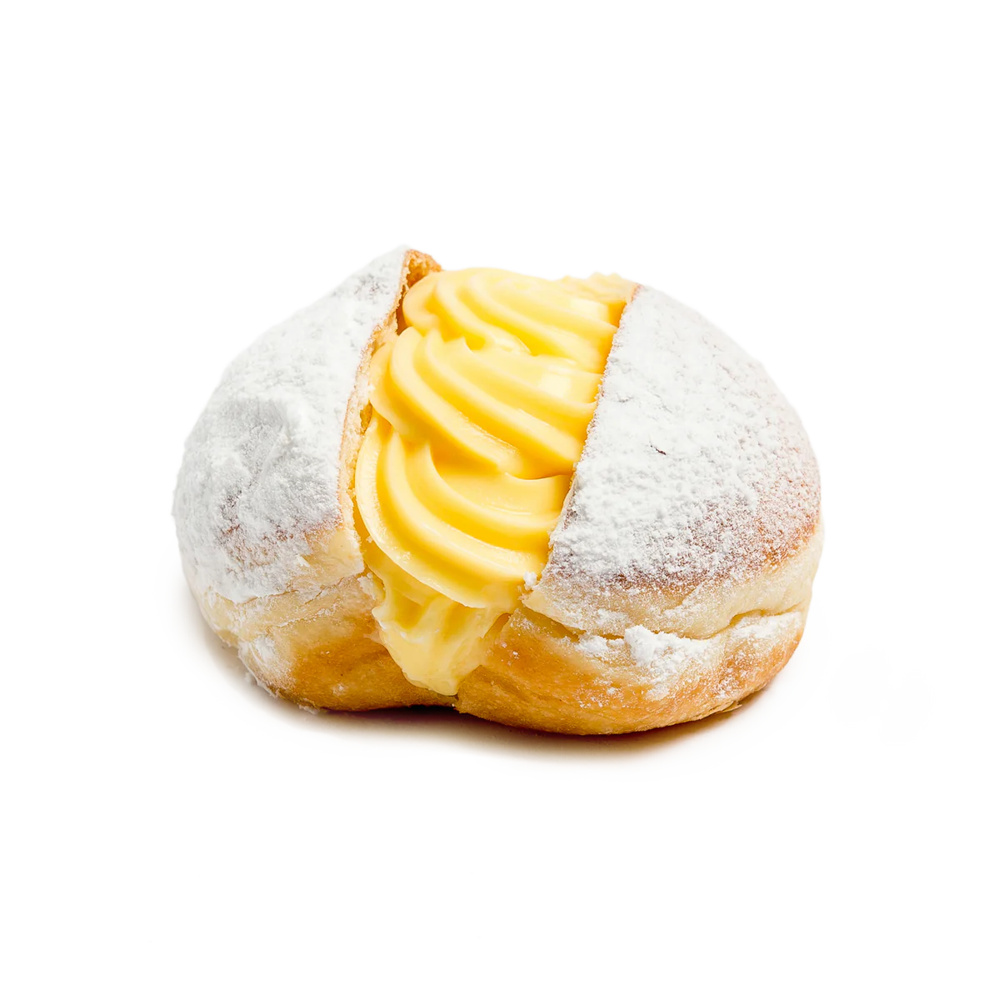
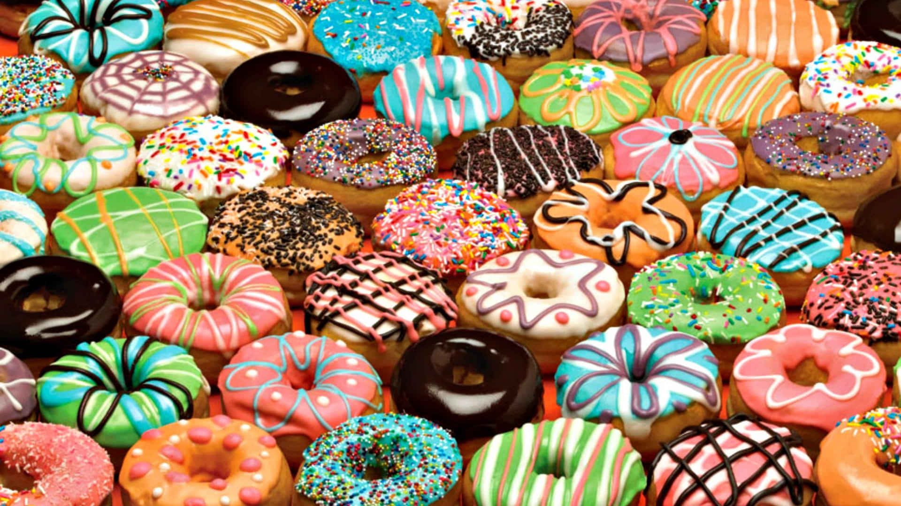

Nuestro Menú
¡Bienvenidos a UFIDÓNAS! Nuestro restaurante ofrece una variedad de donas que combinan clásicos favoritos con innovaciones únicas. Disfruta de donas glaseadas tradicionales, de azúcar y canela, chocolate, rellenas de crema pastelera, jalea de fresa y Nutella.
Explora Nuestras Deliciosas Donas
- Dona de Azúcar tradicional
- Dona de Chocolate
- Dona Rellena Crema Pastelera
Deliciosa dona tradicional cubierta de glaseado azucarado con chispas de colores.

Dona cubierta de glaseado de chocolate y chispas de colores, una delicia que no te podés perder.
Dona rellena de crema pastelera del hogar con receta original francesa, no te quedés sin la tuya.
Promociones Especiales
En UFIDÓNAS, siempre hay una razón para sonreír, especialmente los lunes a las 6 de la tarde, cuando ofrecemos promociones exclusivas. Es nuestro momento de la semana dedicado a consentir a nuestros clientes con descuentos especiales y ofertas irresistibles en todas nuestras deliciosas donas. ¡No te pierdas esta oportunidad de disfrutar de tus donas favoritas a precios aún más accesibles y comenzar la semana con el pie derecho!
2X1
2X1
¿Querés ganarte una dona gratis en tu próxima visita a UFIDÓNAS?
Sigue los siguientes pasos y llevate una dona extra en tu próxima compra en UFIDÓNAS.
- Rellena el formulario que encontrarás más abajo y asegúrate de guardar tu código QR.
- Visita tu local de UFIDÓNAS más cercano.
- Pide tu dona preferida.
- Aségurate de mostrarle el código QR que generaste a el/la encargado/a de atenderte el día de tu visita.
- Repite el paso 3.
- Disfruta de tu dona GRATIS!
¿Qué esperas?
Puedes llevarte una dona gratis en tu próxima visita en UFIDÓNAS.
¡Solo necesitamos que nos dias cuál es tu número de cédula y nos cuentes cuál es
tu dona favorita y por qué! ¿Aún no sabes qué dona llevarte? Nosotros te ayudamos.
Desde su primera aparición a mitades del sigo 19 en Nueva York, Estados Unidos, a lo largo
de los años las donas han acogido todo tipo de colores, sabores, tamaños y formas, si aún
no sabes que tipo de dona te inspira a pasar a nuestros locales, te invitamos a ver este
video sobre cada dona preferida de cada estado de los Estados Unidos.